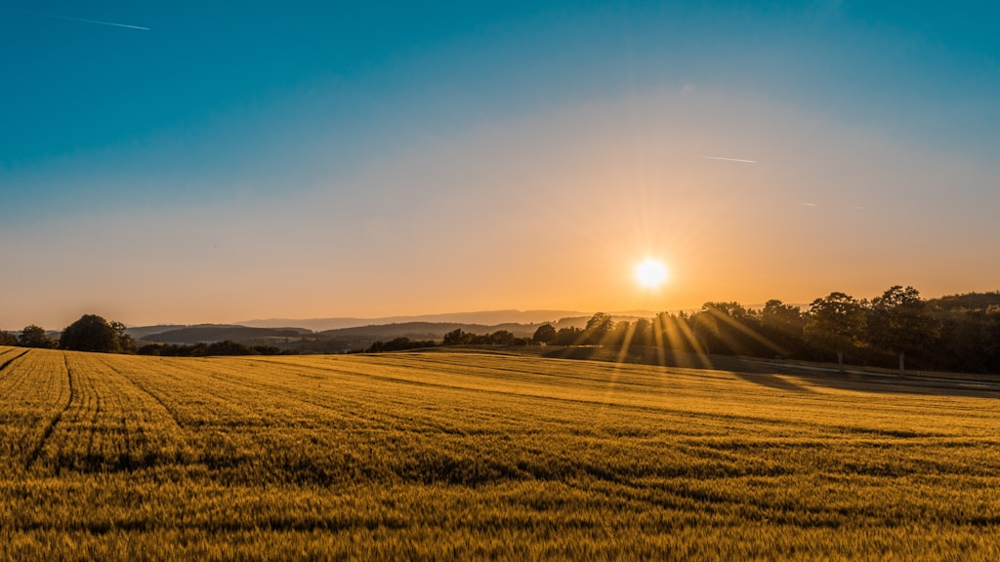
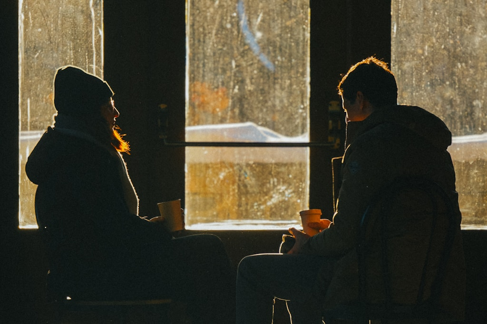
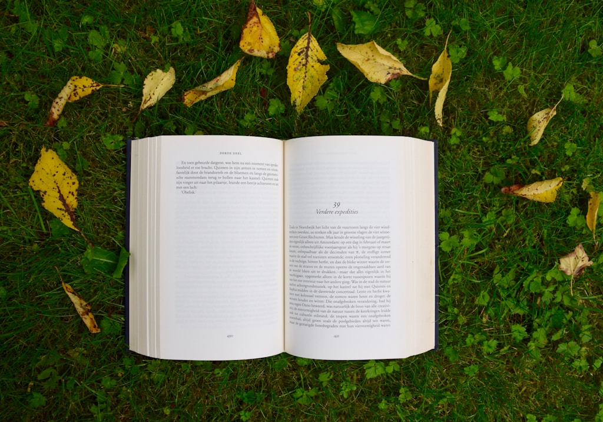
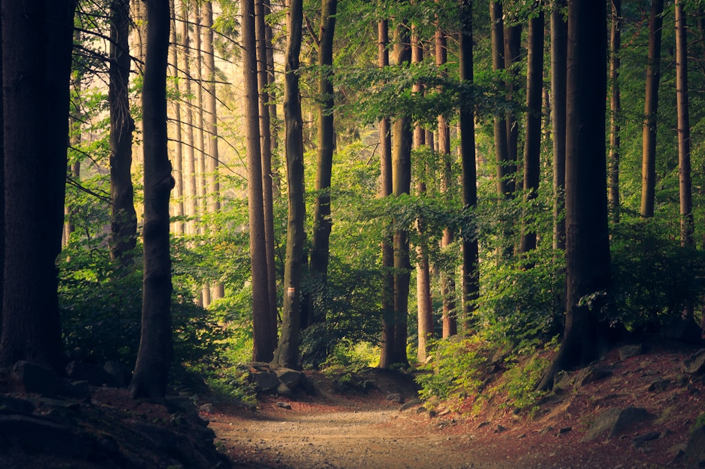
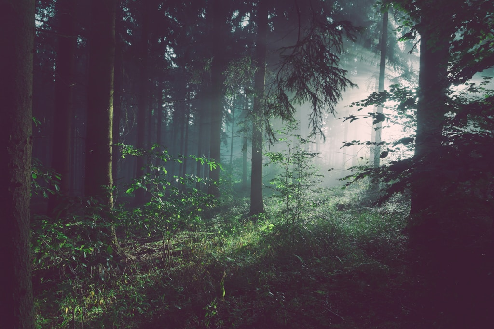
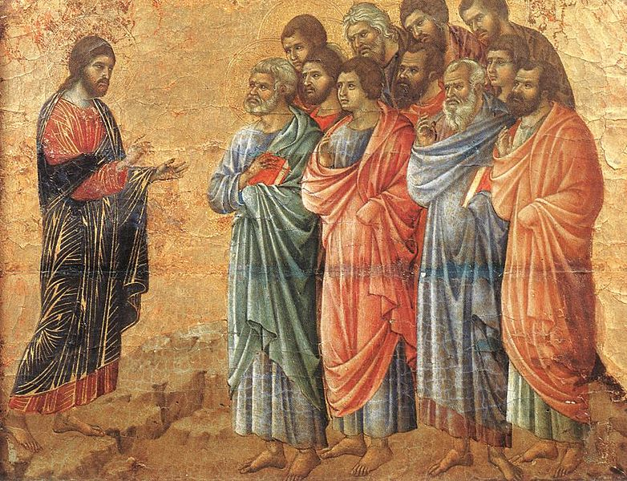

{{ t('home.hero_title') | safe }}
{{ t('home.hero_subtitle') }}
{{ t('home.hero_subtitle_underline') }}
{{ t('home.hero_button') }}
{{ t('home.who_we_are_title') }}
{{ t('home.who_we_are_body') }}
{{ t('home.believe_section_title') }}

{{ t('home.belief_1_title') }}
{{ t('home.belief_1_body') }}

{{ t('home.belief_2_media_title') }}
{{ t('home.belief_2_body') }}

{{ t('home.belief_3_title') }}
{{ t('home.belief_3_body') }}

{{ t('home.belief_4_title') }}
{{ t('home.belief_4_body') }}

{{ t('home.belief_5_title') }}
{{ t('home.belief_5_body') }}

{{ t('home.belief_6_title') }}
{{ t('home.belief_6_body') }}